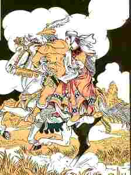

Ar Breur Mager

Ton
|
1. Bravañ merc'h dijentil a oa dre-mañ tro-war-dro,
|
26. Ha ma bet gwall tizhet er c'hof gant un taol
kleze,
En tu all da Naoned, kreiz un emgann bras du-se. 27. Warc'hoazh tro ar c'huzh-heol, e teraouo an nozvezh, Ha kaset vo goude deus an iliz wenn d'e vez.- IV 28. - C'hwi ya d'ar gêr abred ! - Ma 'z an d'ar gêr, oh ! ya de ! - N'eo ket achu ar fest, na kennebeut ar pardaez. 29. - N'on ket evit herzel grand truez am eus outi, O welet ar paotr-saout tal-oc'h-tal ganti en ti. 30. En-dro d'ar plac'hig paour a ouele leizh he c'halon, An holl dud a ouele ha zoken 'n aotro person; 31. E iliz ar barrez, beure mañ, 'n holl a ouele, Re yaouank ha re gozh, nemet he lez-vamm na rae. 32. Seul-vui ar sonerien, tont d'ar maner a sone, Seul-vui he c'honfortec'h, seul-vui he c'halon ranne. 33. Kaset oe doc'h an daol d'ar penn-kentañ, da goaniañ, N'he-deus evet banne na debret un tamm bara. 34. Aet int d'he diwiskañ d'he lakaat en he gwele, Strinket deus he gwalenn, roget he seienn nevez; 35. Ha kuit maez deus an ti, diskabel-kaer, da vale. Lec'h ma aet da guzhet, den ebet na oar doare.- V 36. Lazhet an holl c'houloù, ha kousket mat tud an ti; Ar plac'hig paour dihun, lec'h-all, an derzhienn ganti. 37. - Na piv a zo aze ? - Me, Nola, da vreur-mager. - Te a zo aze, te ! Te eo, te, ma breurig ker !- 38. Hag hi da lamm er-maez, ha kuit war lost he varc'h gwenn; He brec'hig en-dro de'an, en he c'hoazez dreñv e gein. 39. - Ni ya buan, va breur ! Kant lev hon eus graet me gred ! Plijadur m'eus ganit m'am eus-me bet war ar bed. 40. Pell 'mañ c'hoazh ti da vamm ? me garfe be'an degoue'et. - Dalc'h mat, atav, ma c'hoar, vo ket pell vimp erruet.- 41. Ar gaouenn a dec'he, o youal tre diraze; Koulz hag al loened gouez, gant an trouz a oa gante. 42. - Da varc'h a zo ker reizh ; da harnez a zo ker sklaer ! Me gav a'nout kresket un tamm mat, ma breur mager ! 43. Me gav a'nout ken drant ; pellik ma c'hoazh da vaner ? - Dalc'h mat atav, ma c'hoar; pelloc'h e tigoue'emp er gêr. 44. - Da galon a zo yen, ha da vlev a zo glebet, Da galon ha da zorn; me gred az peus anoued. 45. - Dalc'h mat atav, ma c'hoar; setu ni tostik-meurbet, Na glevez ket mouezh skiltr sonerien drant hon eured ?- 46. N'oa ket e gomz laret, e varc'h war-sav a chomas, Ha dridal a reas, hag a-bouez-penn c'hwirinas; 47. Hag i 'n un enezenn, kalz tud enni o tañsal; Paotred ha merc'hed koant, dorn ha dorn, en ur vragal ; 48. Ha gwez glaz tro-war-dro, i karget a avaloù, Hag an heol o sevel a-dreñv war ar mene'ioù; 49. Hag ur feunteunig sklaer 'tont d'an traoñ gant ar gwazhioù; Anaon oc'h evañ, hag o tont adarre bev; 50. Mamm Gwenola ganto, hag he div c'hoar war un dro, C'hoari a-walc'h eno, sonioù ha youadennoù. |
VI
51. Antronoz, d'ar sav-heol, merc'hed yaouank a gase
Korf glan Gwennolaig deus an iliz wenn d'ar bez
|
Dornskrid Keransker N°1 (p. 66)
(2) N'eus ket e-barzh ar bed Gwassoc'h evit ur "vasles" [=lezvamm?]. (7) Div, teir eur en deiz D'ar feunteun evit dour E ven kaset ganti. |
(9) An noz emedo du, an dour emedo troublet Gant mab [=marc'h?] ur kavaliour o tistreiñ eus an Naonet. (12) - Digorit-hu parlant [= barlenn?], me rayo d'eoc'h pemp kant skoed, Ur walennig aour hag ur bizou alaouret. (14) 'Benn an deiz, 'benn pemp bloaz, me yelo d'ho gweled Ha me kaso ganin... |
(x) "Selon une autre version, elle quitte le château de son mari et vient mourir sur le seuil de la porte de son père." (skrivet gant Kervarker) |
Kempennet gant Laura W. Taylor